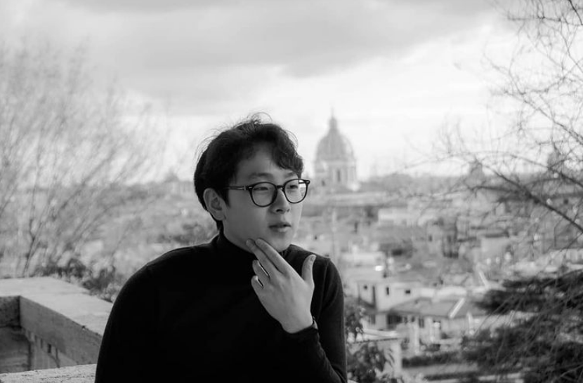

About me
I am an amateur photographer who gets inspired by simple moments and instincts in the city full of movement.
My field of work is the city of Rome where I like to capture contrasts between modernity and eternity that are expressed in black and white.
